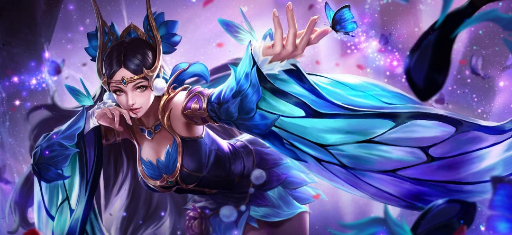

Introduction the game Characters

Diao Chan
is a powerful female mage who utilizes her talented dancing abilites and incorperates it in her magic. She is a beautiful woman hailing from the Continent of Kings. She is known for leaving those fortunate enough to see her appearance in awe of her utter gracefulness and attractiveness.
Early Life
Diaochan was born to a family of courtiers and scholars in the capital city of the Han Dynasty. Her father was a senior official in the imperial court, and her mother was a renowned poet and calligrapher. From a young age, Diaochan showed a remarkable talent for music and dance, and her parents encouraged her to pursue these interests.
As Diaochan grew older, she became increasingly aware of the political intrigues and corruption that permeated the imperial court. She saw firsthand how powerful men used their influence to further their own interests at the expense of the common people. Despite her parents' warnings to stay out of politics, Diaochan became determined to use her talents to make a difference.
Involvment in the Rebellion
One day, Diaochan caught the eye of the tyrannical warlord Dong Zhuo, who had seized control of the Han Dynasty and was ruling with an iron fist. Dong Zhuo was immediately captivated by Diaochan's beauty and grace, and he took her as his personal concubine.
Diaochan saw this as an opportunity to infiltrate Dong Zhuo's inner circle and gather information that could be used to overthrow him. She began to use her musical and dancing skills to charm Dong Zhuo and his closest advisors, all while secretly passing information to the rebels who were plotting against him.
As the rebellion gained momentum, Diaochan's role became increasingly dangerous. She was forced to walk a tightrope between loyalty to the rebels and maintaining her cover as Dong Zhuo's concubine. In the end, her bravery and cunning paid off, and the rebels succeeded in overthrowing Dong Zhuo and restoring order to the Han Dynasty.
Diaochan emerged from the conflict as a hero, celebrated for her role in bringing down one of the most despised rulers in Chinese history. She continued to use her talents to promote justice and equality, becoming a beloved figure in the court of the new emperor.